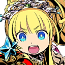
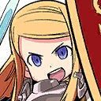

|
 |
Shenmei |
Wow! You're all so powerful! |

Sovereign |
Naturally! Those who would call themselves adventurers must be strong! |

Gunner |
Some things are worthy of a little pride. Your command was excellent, Sovereign. |
Sovereign |
Indeed! Gunner, your marksmanship was magnificent! |
Fencer |
Thanks for watching my back, Protector! You really saved me back there. |

Protector |
Heheh. As a Protector, it is my duty to be the shield of any adventurer. Your swordsmanship is impressive, Fencer. |
Shenmei |
I'm so jealous of all of you! If only I could appear as I was... I just don't feel like myself anymore. |
Gunner |
Are you sure? I thought you were fantastic. |
Shenmei |
R-really? Heheh... Well, I am a pirate, after all. Oh, that's right! I still don't get what's going on here, so... |
Gunner |
Right. We need to explain what happened. I'll start. |
Gunner |
We are adventurers from another world. We heard a voice crying for help, and followed it here. |
Gunner |
According to Fencer, the voice is somehow related to the linking of our worlds. |
Shenmei |
A cry for help? Hmm... I can't ignore someone in trouble, even if we have to find them first. |
Fencer |
If we help them, it might fix the link between our worlds, so that we can all go home! |
Gunner |
Perhaps, but there is no guarantee. |
Sovereign |
Good! Now we know what needs to be done! We must embark on an adventure to seek out the owner of that voice! |
Protector |
I'll do whatever it takes to get home—but first, it's most important for us to help the person in need! |
Sovereign |
Indeed! A motley bunch we may be, but I am counting on all of you! |
Shenmei |
Hell yeah! U-um...? Shouldn't we be going? |
Gunner |
We should...but we have no idea where this person may be. |
Protector |
That's true. It would certainly save us some time if the person calling for help had also shouted their location. |
Fencer |
Should we try asking? |
Protector |
Lo, there! Mysterious voice! Where are you? If you can hear me, please respond! |
Gunner |
Um... Perhaps it would be better to start by gathering information in a nearby city or village. |
Sovereign |
Indeed! Intelligence gathering is the foundation of good adventuring! |
Fencer |
There should be a village west of here! |
Sovereign |
Excellent! Then, once more, I decree our adventure begun! Let us be off! |
Protector |
Hurrah! |
Gunner |
Hmmm... I'm not sure how I feel about this group. |
Shenmei |
Ahahahaha! It'll be all right! Ragtag groups like this make for the best of adventures! |
Gunner |
Hmph. Perhaps you're right. I suppose it's only natural to be excited at the beginning of a new adventure, after all. Heheh. |
Shenmei |
... |
Gunner |
Wh-what's that look for? |
Shenmei |
Everything I've seen of you so far is so cool, calm, and collected... |
Shenmei |
So what you said just now was kind of surprising—and that smile of yours is really cute! |
Gunner |
D-don't be ridiculous. |
Shenmei |
I'm not! You're definitely a passionate adventurer, just like the rest of them! |
Gunner |
I'd appreciate it if you wouldn't make fun of me. |
Shenmei |
Don't worry! I'm not making fun of you! |
Sovereign |
Gunner! Shenmei! What are you dillydallying for?! |
Gunner |
L-let's go, Shenmei! |
Shenmei |
All right! |
 |
Sovereign |
I see. So you were in the middle of searching for your companions when we appeared. |
Protector |
Falling into a trap and getting separated from your group... |
Gunner |
An elementary mistake. |
Fencer |
Oh, no! How embarrassing. Hahahaha! |
Shenmei |
I hope you find them soon! |
Fencer |
Me, too! Ah, that's the village up ahead! |
Shenmei |
Huh? Something seems off. |
Fencer |
Wh-what?! |
 |
| Monster |
Grrrrrrraaaaaaarrrrrrrgggghhhh! |
| Villager |
M-monsters! At a time like this?! |
| Soldier A |
Civilians should take refuge indoors immediately! |
| Soldier B |
Take the infected to the Church! Quickly! |
| Soldier C |
We will chase away the monsters! We must not let them take even a single step into the village! |
|
Gunner |
Hm...? |
Shenmei |
The village is being attacked by monsters! We gotta go help out! |
Gunner |
Sh-Shenmei, wait! We need to hurry! |
|
| Soldier A |
Nrrrgggghhhh?! |
| Monster |
Grrrraaaarrrrggggghhhh! |
Shenmei |
Huzzzaaahhh! |
Shenmei |
You all right, soldier?! |
| Soldier A |
Wh-who are...? Ah! Behind you! |
Shenmei |
Huh?! |
| Monster |
Grrrrrraaarrrrrrrggggghhhh! |
Gunner |
Just in time! |
Shenmei |
Gunner! Th-thanks! |
Gunner |
You don't need to thank me. Let's quickly take out these creatures! |
Shenmei |
Got it! |